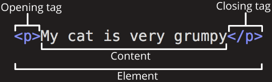
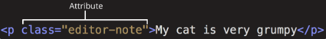
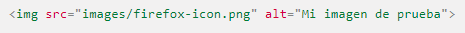
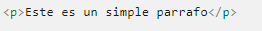
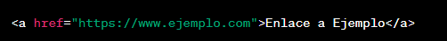
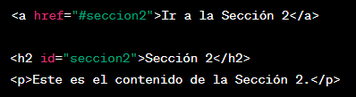

HTML básico
¿Que es?
HTML no es un lenguaje de programación; es un lenguaje de marcado que define la estructura de tu contenido.
HTML
consiste en una serie de elementos que usarás para encerrar diferentes partes del contenido para que se vean
o
comporten de una determinada manera. Las etiquetas de encierre pueden hacer de una palabra o una imagen un
hipervínculo a otro sitio, se pueden cambiar palabras a cursiva, agrandar o achicar la letra, etc.
Estructura

-
La etiqueta de apertura: consiste en el nombre del elemento (en este caso, p), encerrado
por paréntesis angulares (<>) de apertura y cierre. Establece dónde comienza o empieza a tener efecto el
elemento en este caso, dónde es el comienzo del párrafo—
-
La etiqueta de cierre: es igual que la etiqueta de apertura, excepto que incluye una
barra de cierre (/) antes delnombre de la etiqueta. Establece dónde termina el elemento —en este caso
dónde termina el párrafo—.
-
El contenido: este es el contenido del elemento, que en este caso es sólo texto.
-
El elemento: la etiqueta de apertura, más la etiqueta de cierre, más el contenido
equivale al elemento.
Los elementos pueden también tener atributos, que se ven así:

Los atributos contienen información adicional acerca del elemento, la cual no quieres que aparezca en el
contenido real del elemento. Aquí class es el nombre del atributo y editor-note el valor del atributo. En
este
caso, el atributo class permite darle al elemento un nombre identificativo, que se puede utilizar luego para
apuntarle al elemento información de estilo y demás cosas.
-
Un espacio entre este y el nombre del elemento (o del atributo previo, si el elemento ya posee uno o más
atributos).
-
El nombre del atributo, seguido por un signo de igual (=).
-
Comillas de apertura y de cierre, encerrando el valor del atributo.
Imagenes
Lo logra a través del atributo src (source), el cual contiene el path (ruta o ubicación)
de tu archivo de imagen.

También se incluye un atributo alt (alternative) el cual contiene un texto que debería describir la imagen,
y que podría ser accedido por usuarios que no pueden ver la imagen, quizás porque:
-
Son ciegos o tienen deficiencias visuales. Los usuarios con impedimentos visuales usualmente utilizan
herramientas llamadas Lectores de pantalla (Screen Readers), los cuales les leen el texto contenido en
el
atributo alt.
-
Se produjo algún error en el código que impide que la imagen sea cargada. Como ejemplo, modifica
deliberadamente la ubicación dentro del atributo src para que este sea incorrecto.
El texto alt debe proporcionarle al lector la suficiente información como para que este tenga una buena
idea de qué muestra la imagen.
Marcado de texto
Esta sección cubrirá algunos de los elementos HTML básicos que usarás para el marcado de texto.
Encabezados:
-
Los elementos de encabezado permiten especificar que ciertas partes del contenido son
encabezados, o subencabezados del contenido. De la misma forma que un libro tiene un título principal, y
que
a su vez puede tener títulos por cada capítulo individual, y subtítulos dentro de ellos, un documento
HTML puede tenerlos
también. HTML posee seis niveles de encabezados, desde h1 hasta h6, siendo el h1 el titulo mas
importante o grande
y el h6 el mas pequeño.
Párrafos:
-
Como se explicó más arriba, los elementos se utilizan para encerrar párrafos de texto; los
usarás frecuentemente para el marcado de contenido de texto regular:

Listas:
-
Mucho del contenido web está dado por listas, así que HTML tiene elementos especiales para
ellas. El marcado de listas se realiza siempre en al menos dos elementos. Los dos tipos de listas más
comunes son
las listas ordenadas y las desordenadas:
-
Las listas desordenadas son aquellas en las que el orden de los items no es relevante, como en
una lista de compras. Estas son encerradas en un elemento.
-
Las listas ordenadas son aquellas en las que el orden sí es relevante, como en una receta. Estas
son encerradas en un elemento.
Vinculos
Los vínculos HTML son elementos utilizados para crear enlaces a otras páginas web, archivos o ubicaciones
dentro de la misma página. Permiten a los usuarios hacer clic en un texto o imagen y ser redirigidos a otro
recurso relacionado.
-
Etiqueta de enlace (<a>): Para crear un vínculo, necesitas utilizar la etiqueta <a>. Esta
etiqueta define el inicio y el fin del enlace. El contenido dentro de la etiqueta <a> será visible
para el usuario y se puede hacer clic en él.

En este ejemplo, el texto "Enlace a Ejemplo" se mostrará en la página y será un enlace a
"https://www.ejemplo.com".
El atributo href se utiliza para especificar la dirección URL o la ubicación a la que se debe
redirigir al hacer clic en el enlace.
-
Vínculos a secciones específicas de una página: Puedes enlazar a secciones específicas dentro de una
página utilizando identificadores y el atributo href.

Al hacer clic en el enlace, el usuario se desplazará automáticamente a la sección con el identificador
"seccion2" dentro de la misma página.
Recuerda que los vínculos HTML son una herramienta importante para la navegación web y la interconexión
de contenido. Puedes personalizar los vínculos utilizando CSS para cambiar su apariencia y añadir
interactividad a tu sitio web.